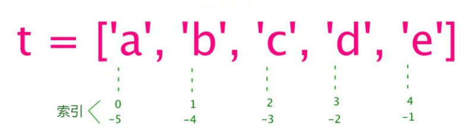

5 你知道Python基本数据类型是哪6个么¶

Python 是强类型语言，在学习 Python 时，有必要了解 Python 有哪些基本数据类型，一共 6 个：Number（数字）、String（字符串）、List（列表）、Tuple（元组）、Set（集合）、Dictionary（字典）。数据类型的知识是非常多的，一篇文章讲不明白，本文仍然属于入门系列，内容主要是基础简介。
更深层次的知识会在进阶篇再做剖析。进阶篇计划 2021 年 1 月份公众号改名后开始更新哦。
赋值即用的变量¶
不像其他语言，变量必须先声明了才能使用，Python 的变量不需要声明，直接赋值就可以用了，而且必须赋值才能用哦，赋值后变量才会被创建。例如：
counter = 100 # 整型变量
miles = 1000.0 # 浮点型变量
name = "runoob" # 字符串
如果有多个变量，可以在一条语句中一起赋值，例如：
a = b = c = 1
或者：
a, b, c = 1, 2, "runoob"
a 的值为 1，b 的值为 2，c 的值为 “runoob”。
Number（数字）¶
数字包括 int、float、bool、complex。
int
整型，例如：
a = 1
b = 2
float
浮点数，也就是小数，例如：
a = 1.2
b = 3.4
bool
布尔值，只有 True 和 False 2个值。
complex
复数，例如：
a = 3.14j
b = 3e+26j
String（字符串）¶
用单引号、多引号或三引号框起来的就是字符串，例如：
a = 'hello'
a = "hello"
a = """hello"""
可以使用 + 把多个字符串拼接在一起：
a = "Hello" + "World"
也可以使用 * 来重复：
a = "x" * 3 # 值为xxx
可以通过 变量[头下标:尾下标] 来截取部分字符串，正数表示从左边起，以
0 开始。负数表示从右边起，以 -1 开始。例如：
a = "qwert"
b = a[0:2] # qw
c = a[2:] # ert
d = a[-2:-1] # r 倒数第二个字符
e = a[-1:] # t 最后一个字符
List（列表）¶
列表是由多个数据组成的，列表中的数据类型可以不同。它是用中括号 []
括起来的，格式和索引如下：

跟字符串一样，列表也可以使用 + 来合并列表，使用 *
来重复元素，使用 变量[头下标:尾下标] 来截取子列表。
除此之外，列表使用 append() 函数来添加元素：
b = []
b.append(4)
b.append(5) # b 的值为 [4, 5]
使用 for ... in ... 来遍历：
a = [1, 2, 3]
for i in a:
print(i)
Tuple（元组）¶
元组和列表类似，区别在于元组是使用小括号 ()
括起来的，并且元组不能修改。例如：
tup1 = () # 空元组
tup2 = (20,) # 一个元素，需要在元素后添加逗号
tup3 = (1, 2, 3)
Set（集合）¶
集合和列表类似，区别在于集合的数据不能重复，所以常用来删除重复元素和做集合运算。例如：
sites = {'Google', 'Taobao', 'Runoob', 'Facebook', 'Zhihu', 'Baidu'}
# {'Zhihu', 'Baidu', 'Taobao', 'Runoob', 'Google', 'Facebook'}
print(sites) # 输出集合，重复的元素被自动去掉
集合运算：
# set可以进行集合运算
a = set('abracadabra')
b = set('alacazam')
# {'r', 'b', 'd'}
print(a - b) # a 和 b 的差集
# {'b', 'c', 'a', 'z', 'm', 'r', 'l', 'd'}
print(a | b) # a 和 b 的并集
# {'c', 'a'}
print(a & b) # a 和 b 的交集
# {'z', 'b', 'm', 'r', 'l', 'd'}
print(a ^ b) # a 和 b 中不同时存在的元素
Dictionary（字典）¶
字典也是由多个数据组成的，是用花括号 {}框起来的，键(key) :
值(value) 形式的数据。例如：
a = {} # 创建空字典
b = dict() # 创建空字典
c = {"x": 1, "y": 2} # 创建字典同时赋值
c["z"] = 3 # 使用中括号[]添加
print(c["x"]) # 使用中括号[]根据key查询value
字典的遍历需要同时使用 for ... in ... 和 items() 函数：
a = {"x": 1, "y": 2}
for k, v in a.items():
print(k, v)
数据类型转换¶
不同数据类型是可以相互转换的，以下是用于转换的函数：
函数 |
描述 |
|---|---|
int(x) |
将x转换为一个整数 |
float(x) |
将x转换到一个浮点数 |
complex(real [,imag]) |
创建一个复数 |
str(x) |
将对象 x 转换为字符串 |
tuple(s) |
将序列 s 转换为一个元组 |
list(s) |
将序列 s 转换为一个列表 |
set(s) |
转换为可变集合 |
dict(d) |
创建一个字典。d 必须是一个 (key, value)元组序列。 |
简单的转换使用单个函数即可，但有时候我们会需要写点代码来实现特定的数据类型转换。比如把 2 个列表，转换为字典，一个列表作为 key，一个列表作为 value：
a = ["q", "w", "e"]
b = [1, 2, 3]
d = dict(zip(a, b)) # {'q': 1, 'w': 2, 'e': 3}
小结¶
本文简要介绍了 Python 6 个基本数据类型的知识，点到为止。看到这篇文章的朋友可能会有疑问，入门系列文章的内容是如何界定的？我对入门系列的定位是前菜，先垫垫肚子，了解 Python 的基本知识。等到正餐硬菜上来的时候，不会无从下咽，不会慌不择食，不会有阅读门槛。我认为入门就应该简单点，不然要浅不浅，要深不深，不懂的人看着懵，懂的人看着这也没讲那也没讲。我写一下《流畅的 Python》前 4 章的标题，可以先感受一下，《第 1 章 Python 数据模型》、《第 2 章 序列构成的数组》、《第 3 章 字典和集合》、《第 4 章 文本和字节序列》。
参考：